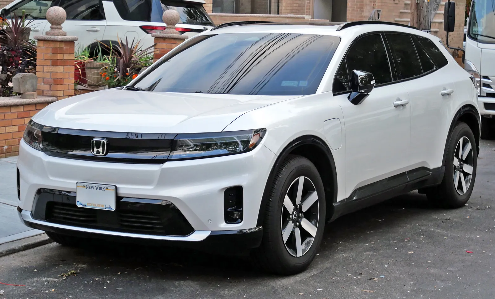
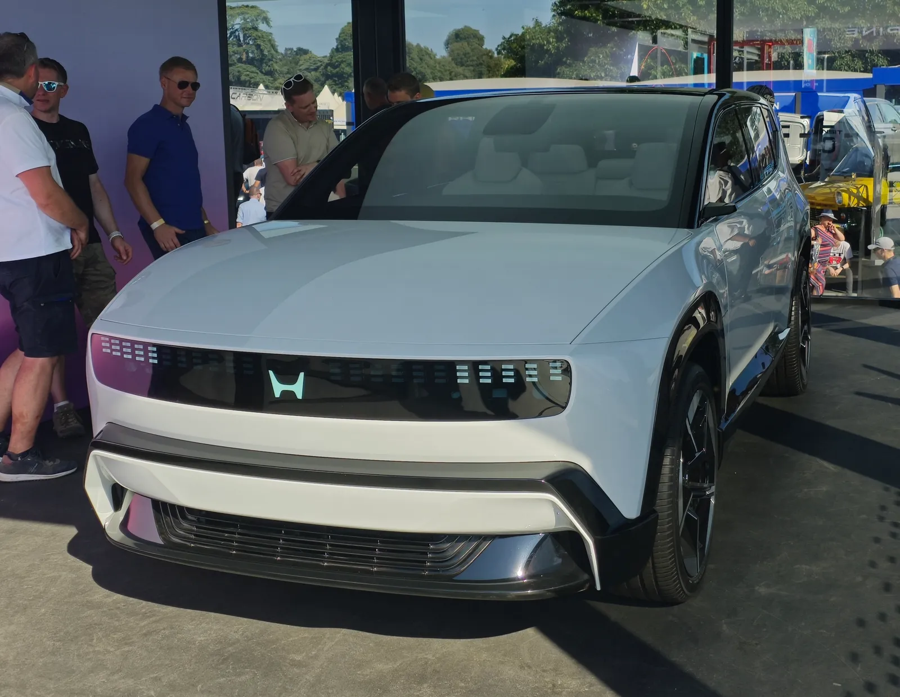
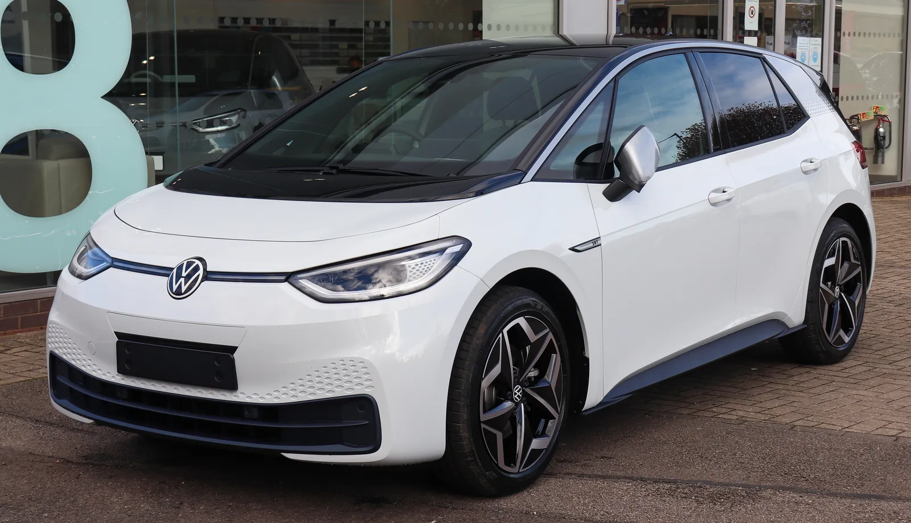
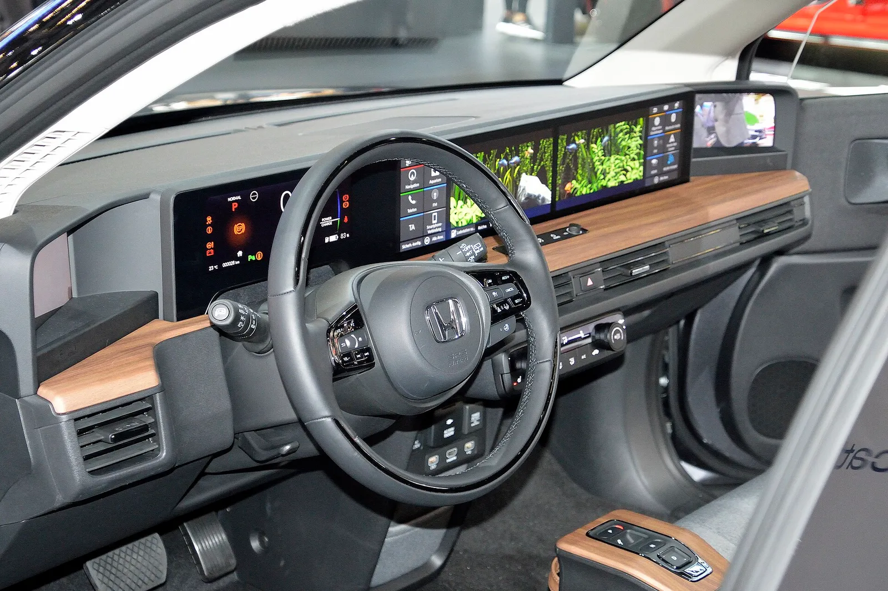

▲ 혼다의 현행 순수전기 SUV 프롤로그. 혼다는 퀀텀스케이프와 전고체 배터리 공동 개발에 나섰다 ⓒ Wikimedia Commons
"경쟁 기술 대비 뚜렷한 장점을 확인했다."
혼다(Honda)가 미국 배터리 스타트업 퀀텀스케이프(QuantumScape)의 전고체 배터리 기술을 직접 손으로 검증한 뒤 내놓은 평가다. 두 회사는 2026년 6월 18일, 전고체 배터리와 그 제조 공정을 함께 개발하는 다년간의 공동 연구 협약을 발표했다. 퀀텀스케이프로서는 폭스바겐에 이은 두 번째 완성차 대형 파트너다.
전고체 배터리는 몇 년째 "곧 나온다"는 말만 반복돼 온 기술이다. 혼다는 왜, 그리고 어떤 근거로 이 시점에 퀀텀스케이프를 파트너로 택했을까.
1. 무슨 협약을 맺었나
퀀텀스케이프는 2026년 6월 18일, 혼다 R&D와 다년간의 공동 연구 협약을 체결했다고 공식 발표했다. 협약의 핵심은 퀀텀스케이프의 전고체 배터리 플랫폼(QS 배터리 플랫폼)을 발전시키는 데 양사의 역량을 결합하는 것이다. 배터리 셀 자체의 기술뿐 아니라, 이를 실제 양산으로 옮기기 위한 제조 공정 공동 개발도 협약 범위에 포함됐다.
이번 발표는 갑작스러운 것이 아니다. 앞서 혼다는 퀀텀스케이프와 별도의 기술 평가 협약(technology evaluation agreement)을 맺고, 퀀텀스케이프의 고체 배터리 플랫폼을 직접 손으로 테스트하는 심층 실무 평가와 경쟁 기술 대비 벤치마킹을 진행해왔다. 이번 다년 계약은 그 평가 결과에 대한 혼다의 '합격 판정' 이후 나온 다음 단계다.

▲ 혼다의 차세대 순수전기 플랫폼 '혼다 0 시리즈'의 SUV 프로토타입. 혼다는 이 신규 EV 라인업을 포함한 전동화 전반에 새로운 배터리 기술 도입을 검토하고 있다 ⓒ Wikimedia Commons
2. 퀀텀스케이프는 어떤 회사인가
퀀텀스케이프는 세라믹 분리막을 사용하는 리튬 금속 전고체 배터리를 개발해온 미국 실리콘밸리 스타트업이다. 기존 리튬이온 배터리가 액체 전해질을 쓰는 것과 달리, 전고체 배터리는 고체 전해질(또는 분리막)을 사용해 이론적으로 더 높은 에너지 밀도와 안전성을 확보할 수 있다는 평가를 받아왔다.
| 구분 | 전고체 배터리 | 액체 전해질 리튬이온 |
|---|---|---|
| 전해질 형태 | 고체(세라믹 분리막 등) | 액체 유기 전해질 |
| 에너지 밀도 잠재력 | 이론상 더 높음 | 현재 양산 기술의 사실상 상한 근접 |
| 화재·열폭주 리스크 | 구조적으로 낮은 편(가연성 액체 미사용) | 손상·과열 시 열폭주 리스크 존재 |
| 양산 난이도 | 대량 생산 공정 확립이 관건 | 이미 대규모 양산 체계 확립 |
| 현재 단계 | 완성차와의 공동 개발·검증 단계 | 전 세계 전기차에 광범위 적용 중 |
퀀텀스케이프는 앞서 폭스바겐그룹과 손잡고 QSE-5 셀 기술을 개발해왔으며, 2025년 9월에는 폭스바겐 산하 두카티가 QSE-5 셀을 탑재한 오토바이를 공개하기도 했다. 혼다는 이 폭스바겐에 이은 두 번째 대형 완성차 파트너다.
3. 자동차를 넘어 오토바이·발전장비까지
이번 협약에서 눈에 띄는 대목은 적용 범위다. 혼다는 전고체 배터리 기술을 전기차뿐 아니라 오토바이, 전력 장비 플랫폼까지 폭넓게 검토하고 있는 것으로 전해진다. 이는 혼다가 이륜차와 범용 엔진·발전기 사업에서도 세계적인 지위를 갖고 있는 회사라는 점과 맞닿아 있다.
📍 혼다에게 '멀티 플랫폼' 배터리가 중요한 이유
혼다는 승용차 외에도 세계 최대 이륜차 제조사이며, 발전기·경운기 등 범용 동력 장비 사업도 상당한 규모를 갖추고 있다. 하나의 배터리 플랫폼을 자동차·오토바이·전력장비에 걸쳐 공유할 수 있다면, 개발비 분산과 규모의 경제 확보 측면에서 유리하다. 전고체 배터리가 실제로 여러 제품군에 적용 가능한 수준까지 성숙한다면, 혼다의 전동화 전략 전반에 미치는 파급력이 클 것으로 보인다.

▲ 퀀텀스케이프의 첫 완성차 파트너였던 폭스바겐의 ID.3. 폭스바겐은 QSE-5 셀 기술을 이미 오토바이(두카티)에 적용했다 ⓒ Wikimedia Commons
4. 왜 지금, 전고체 배터리인가
전고체 배터리는 업계에서 오랫동안 "몇 년 뒤엔 나온다"는 말이 반복돼 온 기술이다. 도요타·닛산 등 다수의 완성차 업체가 각자 전고체 배터리 개발을 진행 중이며, 상용화 시점은 계속 미뤄져 왔다. 그런 가운데 혼다가 자체 개발이 아닌 외부 전문 스타트업과의 협력을 택했다는 점이 눈길을 끈다.
✅ 혼다가 자체 개발 대신 협력을 택한 배경(업계 일반적 해석)
· 전고체 배터리는 셀 설계뿐 아니라 대량 생산 공정 자체가 난제 — 처음부터 다시 쌓기보다 앞선 기술을 보유한 파트너와 손잡는 편이 효율적
· 퀀텀스케이프는 폭스바겐과의 협력 경험으로 완성차 업체와의 공동 개발 노하우를 이미 축적
· 혼다는 이미 기술 평가 협약을 통해 실증 데이터를 직접 확보한 뒤 이번 다년 계약에 나선 만큼, 신중한 검증 절차를 거쳤다는 점이 부각됨
퀀텀스케이프와 혼다의 협약 관련 공식 발표는 퀀텀스케이프 홈페이지에서 확인할 수 있다. 퀀텀스케이프 공식 발표 바로가기
5. 앞으로의 관전 포인트
이번 협약은 어디까지나 '공동 연구' 단계로, 실제 양산 차량에 전고체 배터리가 얹히기까지는 시간이 더 필요하다. 다만 혼다 정도 규모의 완성차 업체가 자체 개발이 아닌 외부 파트너십을 택했다는 점은 업계에 시사하는 바가 크다.
✅ 앞으로 지켜볼 지점
· 공동 개발 결과물이 실제 양산 차종에 언제, 어떤 형태로 반영될지
· 퀀텀스케이프가 폭스바겐·혼다 외 추가 완성차 파트너를 확보할지
· 다른 완성차·배터리 업체들의 전고체 배터리 경쟁 구도 변화 — 도요타·닛산 등의 자체 개발 일정과의 비교

▲ 혼다의 전기차 실내 디자인 사례. 전고체 배터리 상용화는 향후 혼다 전기차 전반의 상품성과 직결될 전망이다 ⓒ Wikimedia Commons
6. 요약
혼다와 퀀텀스케이프가 2026년 6월 18일, 전고체 배터리 및 제조 공정 공동 개발을 위한 다년간의 연구 협약을 체결했다. 혼다는 앞서 별도의 기술 평가 협약을 통해 퀀텀스케이프의 배터리 플랫폼을 직접 검증했고, "경쟁 기술 대비 뚜렷한 장점"이 있다고 판단한 뒤 이번 계약에 나섰다.
퀀텀스케이프에게 혼다는 폭스바겐에 이은 두 번째 주요 완성차 파트너다. 협력 범위는 전기차를 넘어 오토바이, 전력 장비까지 확장될 수 있다는 점도 눈에 띈다.
전고체 배터리는 여전히 상용화까지 시간이 필요한 기술이지만, 대형 완성차 업체가 자체 개발 대신 전문 스타트업과의 협력을 택했다는 점에서 업계 판도 변화의 신호로 읽힌다.